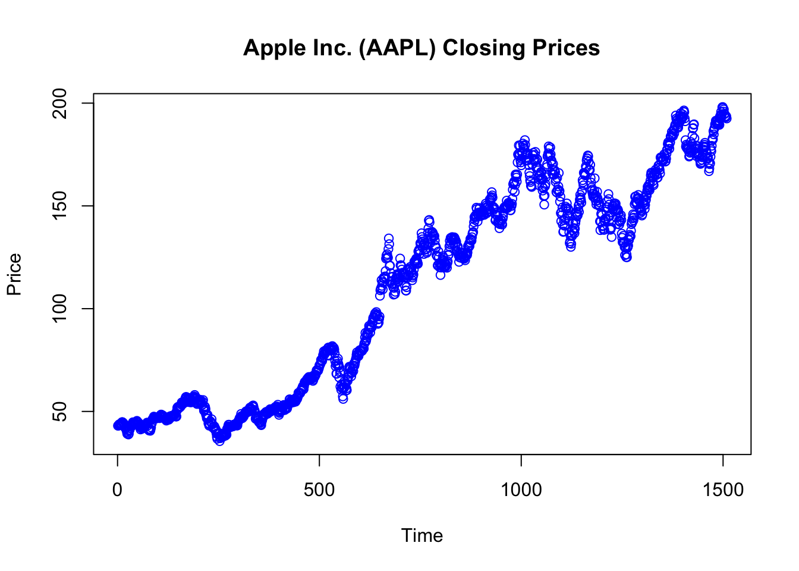
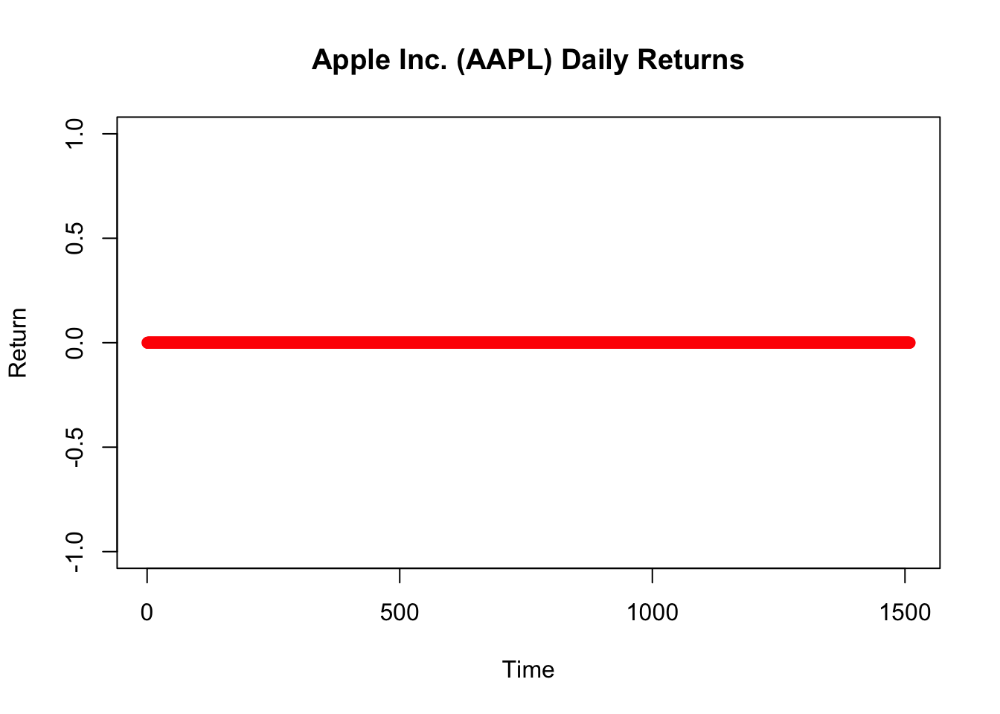
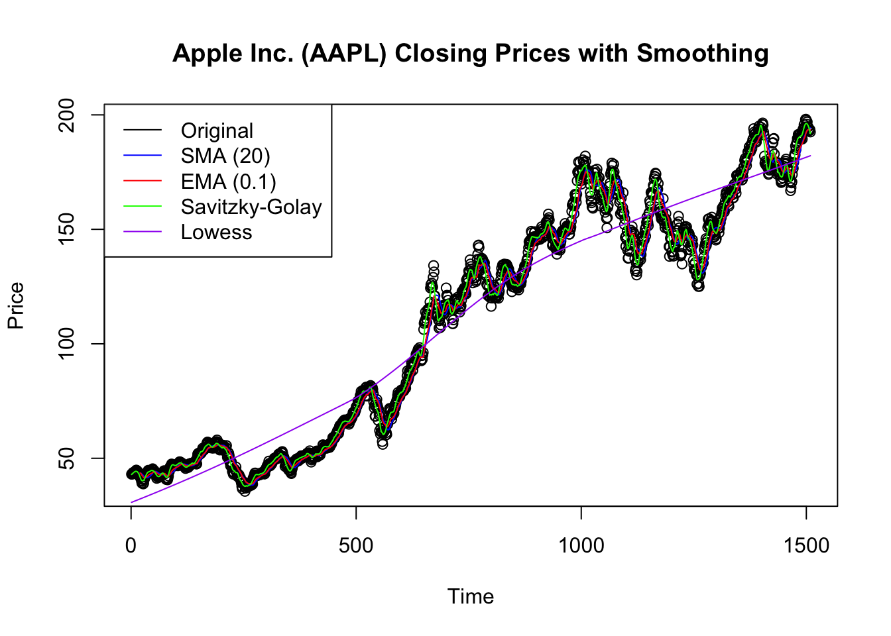
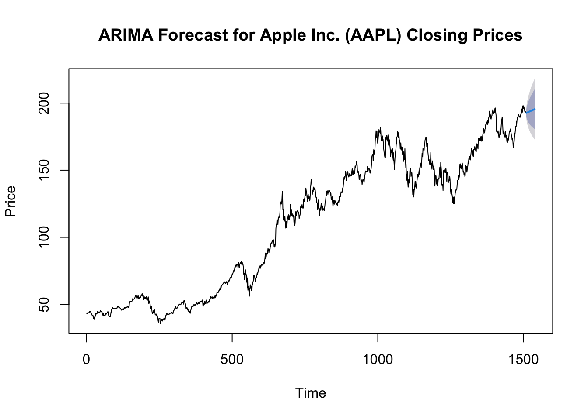
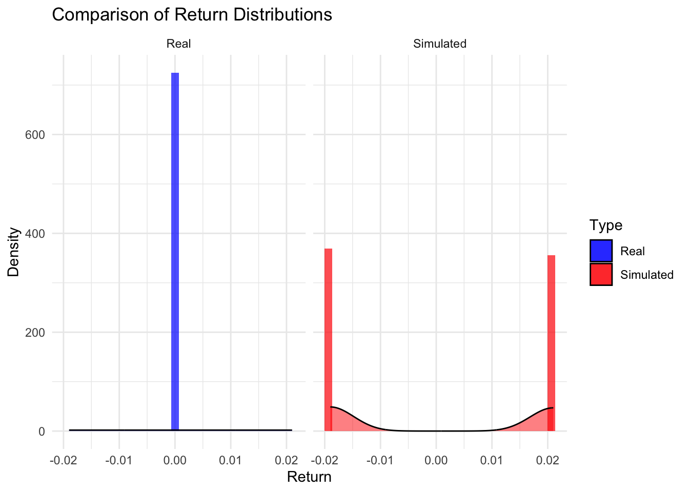

Calculating Stock Returns: Objective: To calculate the annualized return of a stock over a three-year period. Solution:
# Initial and final prices of the stockinitial_price <-100final_price <-150# Investment period in yearsyears <-3# Calculating the annualized returnannualized_return <- (final_price / initial_price)^(1/years) -1# Output the annualized returnprint(annualized_return)
[1] 0.1447142
Explanation: The annualized return is calculated by finding the geometric average of the yearly return. It accounts for compounding over the period.
Descriptive Statistics of Financial Data: Objective: To summarize and interpret a dataset of stock prices. Solution:
# Dataset of stock pricesstock_prices <-c(120, 125, 130, 128, 135)# Summary statisticssummary_stats <-summary(stock_prices)# Output the summary statisticsprint(summary_stats)
Min. 1st Qu. Median Mean 3rd Qu. Max.
120.0 125.0 128.0 127.6 130.0 135.0
Explanation:summary() function in R provides a quick statistical summary of the data, including measures like minimum, first quartile, median, mean, third quartile, and maximum.
Basic Risk Assessment: Objective: To calculate and interpret the standard deviation of stock returns as a measure of risk. Solution:
# Returns of a stockstock_returns <-c(0.05, 0.02, -0.03, 0.04, 0.01)# Calculating standard deviationrisk_measure <-sd(stock_returns)# Output the standard deviationprint(risk_measure)
[1] 0.03114482
Explanation: The standard deviation provides a measure of the dispersion of returns. A higher standard deviation implies greater risk (volatility) in the stock’s returns.
Simple Probability Calculation: Objective: To calculate the probability of an event in a financial context, exemplified by a coin toss. Solution:
# Probability of getting heads in a fair coin tossprobability_heads <-1/2# Output the probabilityprint(probability_heads)
[1] 0.5
Explanation: This is a basic example of classical probability, where each outcome (heads or tails) is equally likely.
Basic Time Series Forecasting: Objective: To use a simple moving average for forecasting the next data point in a financial time series. Solution:
# Historical stock pricesstock_prices <-c(120, 122, 121, 123, 125)# Forecast using a simple moving average of the last 3 pricesforecast_price <-mean(tail(stock_prices, n=3))# Output the forecasted priceprint(forecast_price)
[1] 123
Explanation: This method forecasts the next data point by calculating the average of a specified number of the most recent data points (here, the last three prices).
Advanced Risk Modeling (VaR): Objective: To calculate and interpret the Value at Risk (VaR) for a portfolio. Solution:
# Historical returns of a portfolioportfolio_returns <-c(-0.05, 0.1, 0.03, -0.02, 0.04)# Confidence level (e.g., 95%)alpha <-0.05# Calculating VaRVaR <-quantile(portfolio_returns, alpha)# Output the VaRprint(VaR)
5%
-0.044
Explanation: VaR measures the maximum expected loss over a given period under normal market conditions at a specified confidence level (here, 95%).
Bayesian Update in Stock Forecasting: Objective: To perform a Bayesian update for a stock price prediction. Solution:
# Uniform prior distributionprior <-dbeta(1, 2, 1)# Binomial likelihood based on new evidence (e.g., 6 increases in 10 periods)likelihood <-dbinom(6, size=10, prob=0.5)# Calculating the posterior distributionposterior <- prior * likelihood# Output the posterior probabilityprint(posterior)
[1] 0.4101562
Explanation: Bayesian update combines prior belief (uniform distribution in this case) with new evidence (likelihood) to revise the belief about a stock’s price movement.
Hypothesis Testing in Financial Returns: Objective: To conduct and interpret a hypothesis test comparing a new investment strategy to market returns. Solution:
# Returns from a new investment strategystrategy_returns <-c(0.07, 0.08, 0.09, 0.06, 0.1)# Market average returns for comparisonmarket_returns <-c(0.05, 0.05, 0.05, 0.05, 0.05)# Performing a t-testt_test_result <-t.test(strategy_returns, market_returns)# Output the t-test resultsprint(t_test_result)
Welch Two Sample t-test
data: strategy_returns and market_returns
t = 4.2426, df = 4, p-value = 0.01324
alternative hypothesis: true difference in means is not equal to 0
95 percent confidence interval:
0.01036757 0.04963243
sample estimates:
mean of x mean of y
0.08 0.05
Explanation: The t-test assesses whether the mean returns of the new strategy are significantly different from the market average. The p-value indicates the probability of observing such a difference if there were no real difference.
Complex Time Series Analysis: Objective: To fit an ARIMA model to a financial time series and forecast future values. Solution:
# Assuming stock_prices is a time series object# Install and load the forecast packagelibrary(forecast)
Registered S3 method overwritten by 'quantmod':
method from
as.zoo.data.frame zoo
# Fitting an ARIMA modelarima_model <-auto.arima(stock_prices)# Forecasting the next valueforecast_result <-forecast(arima_model, h=1)# Output the forecastprint(forecast_result)
Point Forecast Lo 80 Hi 80 Lo 95 Hi 95
6 122.2 119.7349 124.6651 118.4299 125.9701
Explanation:auto.arima() function automatically selects the best ARIMA model for the time series data. The forecast() function then uses this model to predict future values (here, the forecast horizon is 1).
Portfolio Optimization: The Markowitz model involves optimizing a portfolio by finding the best combination of assets that minimizes risk (variance) for a given expected return, or maximizes return for a given level of risk. This is achieved by adjusting the weights of each asset in the portfolio.
Solution:
# Load the quadprog library for quadratic programminglibrary(quadprog)# Generate a sequence of 10 dates, one day apartN =10start_date <-as.Date("2023-01-01")dates <-seq.Date(from = start_date, by ="day", length.out = N)# Define the historical returns for four assetshistorical_returns <-data.frame("Asset1"=rnorm(N, mean =0.04), "Asset2"=rnorm(N, mean =0.03), "Asset3"=rnorm(N, mean =0.09), "Asset4"=rnorm(N, mean =0.01))rownames(historical_returns) <- dates# Calculate the covariance matrix of returnsDmat <-cov(historical_returns)# Define dvec as zero for minimum variance portfoliodvec <-rep(0, ncol(historical_returns))# Define the constraints (sum of weights = 1)# Amat needs to have as many rows as there are assets plus one for the sum constraintAmat <-cbind(1, diag(ncol(historical_returns)))bvec <-c(1, rep(0, ncol(historical_returns)))# Specify and solve the optimization problemsol <-solve.QP(Dmat, dvec, Amat, bvec, meq =1)# Extract the optimal weightsoptimal_weights <- sol$solution# Print the optimal weightsprint(optimal_weights)
[1] 0.49888249 0.05909223 0.27920936 0.16281591
Interpretation
Setting Up the Data:
The code first sets up a simulated historical return data for four assets over ten days. This is necessary as the Markowitz model requires historical return data to calculate asset weights.
Covariance Matrix:
Dmat is calculated as the covariance matrix of the asset returns. It represents the risk relationships between each pair of assets, crucial in determining how asset prices move relative to each other.
Defining Optimization Parameters:
The vector dvec is set to zero since the goal is to minimize variance without targeting a specific return.
Amat combines an equality constraint (that the sum of the asset weights equals 1) with non-negativity constraints (each asset weight must be zero or positive).
Quadratic Programming Problem:
The solve.QP function is used to solve the quadratic programming problem. It aims to find the asset weights that minimize the overall portfolio variance subject to the given constraints.
Optimal Weights:
The solution sol$solution provides the optimal weights for each asset. These weights represent how much of the portfolio should be allocated to each asset to achieve minimum risk.
Result:
The output is a set of portfolio weights that minimize the portfolio’s variance (risk), considering the historical return covariance of the assets and the constraints (total weight equals 1, non-negative weights). This represents the most risk-efficient allocation of assets in the portfolio under the given conditions.
Important
These solutions provide a mix of conceptual explanations and practical R code, offering a comprehensive understanding of each question’s objective and methodology.
B.2 Chapter 2: Toolkit
Theoretical Questions Solutions:Easier:
R’s Role in Financial Analysis:
Solution: R offers extensive packages for statistical analysis and data handling, making it ideal for analyzing complex financial data. Its powerful graphical capabilities enable clear visualization of financial trends and patterns.
Advantages of Cloud Computing in Finance:
Solution: Cloud platforms like Posit Cloud provide scalability, easy access to advanced analytics tools, and collaborative features, essential for handling large datasets and complex financial models.
Data Visualization Importance:
Solution: Data visualization is key in financial analysis for interpreting complex data sets and communicating findings effectively. ggplot2 offers a versatile, layer-based plotting system, making complex visualizations more intuitive.
Version Control with Git:
Solution: Version control is crucial for managing changes in code, especially in collaborative projects. Git allows tracking of changes, reverting to previous versions, and effective team collaboration.
Growth Mindset in Data Science:
Solution: A growth mindset encourages continual learning and adaptability, crucial in a field like financial data analytics, where technologies and market conditions are constantly evolving.
Advanced:
Statistical vs. Machine Learning Approaches:
Solution: Statistical modeling typically involves hypothesis-driven models, while machine learning focuses on prediction using data-driven models. Both approaches are valuable in financial data analysis, each with strengths in different scenarios.
Reproducibility Challenges:
Solution: Challenges include data accessibility, software environment consistency, and clear documentation. Solutions involve using version control, containerization tools, and comprehensive documentation of analysis steps.
Collaborative Coding with Git and GitHub:
Solution: Git and GitHub facilitate version control, issue tracking, and code review, supporting a collaborative workflow. This ensures code integrity and effective team collaboration in financial analysis projects.
Tidyverse Ecosystem:
Solution: The Tidyverse provides a consistent and user-friendly syntax for data import, cleaning, manipulation, and visualization, streamlining the data analysis process and enhancing productivity in financial data analytics.
Modular Coding for Financial Analysis:
Solution: Modular coding in R improves code readability, reusability, and testing. In financial analysis, where models can be complex, this approach enables easier maintenance and collaboration.
Practical Questions Solutions:Easier:
Basic R Data Manipulation:
data <- data %>%mutate(percent_change = (stock_price -lag(stock_price)) /lag(stock_price) *100)
Interpretation: Percentage change helps identify trends in stock prices, indicating potential growth or decline.
Creating Plots in R:
ggplot(data, aes(x = date, y = stock_price)) +geom_line()
`Interpretation: Line charts provide a clear view of stock price trends over time, aiding in investment decisions.
Git Basics: Commands: git init, git add ., git commit -m "Initial commit" Benefits: Ensures code versioning, allows tracking of changes, and facilitates team collaboration.
Data Cleaning in R:
data <- data %>%mutate(stock_price =ifelse(is.na(stock_price), mean(stock_price, na.rm =TRUE), stock_price))
Implications: Handling missing data prevents biases and errors in financial analysis.
Basic Linear Regression in R:
model <-lm(stock_price ~ stock_id, data = data)summary(model)
Interpretation: The model provides insights into how stock prices are related to their IDs, which could correlate with other financial factors.
Advanced:
Advanced Financial Modeling:
model <-auto.arima(stock_data$stock_price)forecast(model)
Assumptions: Assumes stock prices follow an ARIMA process. Limitations include potential overfitting and sensitivity to data anomalies.
Machine Learning Application:
model <-train(stock_price ~ ., data = stock_data, method ="rf")
Choice and Effectiveness: Random Forest is chosen for its ability to handle non-linear relationships in data, useful in complex financial markets.
Reproducible Analysis with Quarto: Use Quarto to create a document that combines R code for financial analysis, outputs, and narrative. Importance: Ensures that financial analyses can be reliably reproduced and verified.
Benefit: This manipulation provides insights into the average performance of each stock, crucial for portfolio analysis.
Collaborative Financial Project using GitHub: Workflow: Clone a repository, create branches for features, use pull requests for merging. Benefits: Enhances collaboration, ensures code review, and maintains project organization.
These solutions offer a comprehensive understanding of both the theoretical concepts and practical applications in financial data analytics using R and related tools.
B.3 Chapter 4: Time series models
Here are the R coded solutions with detailed explanations for each exercise:
Exercise 1:
# Install and load necessary packageslibrary(tidyquant)
Loading required package: lubridate
Attaching package: 'lubridate'
The following objects are masked from 'package:base':
date, intersect, setdiff, union
Loading required package: PerformanceAnalytics
Loading required package: xts
Loading required package: zoo
Attaching package: 'zoo'
The following objects are masked from 'package:base':
as.Date, as.Date.numeric
Attaching package: 'PerformanceAnalytics'
The following object is masked from 'package:graphics':
legend
Loading required package: quantmod
Loading required package: TTR
# Download historical stock prices for Apple Inc. (AAPL)aapl_data <-tq_get("AAPL", from ="2018-01-01", to ="2023-12-31")# Extract the closing prices and calculate daily returnsclosing_prices <- aapl_data$closedaily_returns <- (closing_prices -lag(closing_prices)) /lag(closing_prices)# Plot the closing prices over timeplot(closing_prices, main ="Apple Inc. (AAPL) Closing Prices",xlab ="Time", ylab ="Price", col ="blue")

# Plot the daily returns over time plot(daily_returns, main ="Apple Inc. (AAPL) Daily Returns",xlab ="Time", ylab ="Return", col ="red")

Explanation: - The tidyquant package is used to download historical stock price data from Yahoo Finance. Certainly! Here’s the complete explanation for Exercise 1:
Explanation: - The tidyquant package is used to download historical stock price data from Yahoo Finance. - tq_get() retrieves the data for the specified ticker symbol (AAPL) and date range. - The closing prices are extracted from the downloaded data using aapl_data$close. - Daily returns are calculated based on the closing prices using the formula (closing_prices - lag(closing_prices)) / lag(closing_prices). - The closing prices and daily returns are plotted using the plot() function. - The plots help identify trends, seasonality, or unusual patterns in the price and return series.
Exercise 2:
library(signal)
Attaching package: 'signal'
The following objects are masked from 'package:stats':
filter, poly
# Apply smoothing techniquessma_20 <-SMA(closing_prices, n =20)ema_0.1<-EMA(closing_prices, n =20, wilder =FALSE, ratio =0.1)
Warning in EMA(closing_prices, n = 20, wilder = FALSE, ratio = 0.1): both 'n'
and 'ratio' are specified; using 'n'
sg_filtered <-sgolayfilt(closing_prices, p =3, n =21)lowess_smoothed <-lowess(closing_prices)# Plot the original price series and smoothed seriesplot(closing_prices, main ="Apple Inc. (AAPL) Closing Prices with Smoothing",xlab ="Time", ylab ="Price", col ="black")lines(sma_20, col ="blue")lines(ema_0.1, col ="red")lines(sg_filtered, col ="green")lines(lowess_smoothed$y, col ="purple")legend("topleft", legend =c("Original", "SMA (20)", "EMA (0.1)", "Savitzky-Golay", "Lowess"),col =c("black", "blue", "red", "green", "purple"), lty =1)

Explanation: - The SMA() function calculates the Simple Moving Average with a window size of 20 days. - The EMA() function calculates the Exponential Moving Average with a smoothing factor of 0.1. - The sgolayfilt() function applies the Savitzky-Golay filter with a polynomial order of 3 and a window size of 21. - The lowess() function applies Lowess smoothing with default parameters. - The original price series and smoothed series are plotted on the same graph using plot() and lines() functions. - The differences between the smoothing methods and their effectiveness in capturing the underlying trend can be observed from the plot.
Exercise 3:
library(tseries)library(tidyverse)
── Attaching core tidyverse packages ──────────────────────── tidyverse 2.0.0 ──
✔ dplyr 1.1.4 ✔ readr 2.1.5
✔ forcats 1.0.0 ✔ stringr 1.5.1
✔ ggplot2 3.4.4 ✔ tibble 3.2.1
✔ purrr 1.0.2 ✔ tidyr 1.3.1
── Conflicts ────────────────────────────────────────── tidyverse_conflicts() ──
✖ dplyr::filter() masks signal::filter(), stats::filter()
✖ dplyr::first() masks xts::first()
✖ dplyr::lag() masks stats::lag()
✖ dplyr::last() masks xts::last()
ℹ Use the conflicted package (<http://conflicted.r-lib.org/>) to force all conflicts to become errors
# Test for stationarity using the ADF testadf_test <-adf.test(closing_prices)print(adf_test)
Augmented Dickey-Fuller Test
data: closing_prices
Dickey-Fuller = -2.7663, Lag order = 11, p-value = 0.2539
alternative hypothesis: stationary
# If non-stationary, apply differencingif (adf_test$p.value >0.05) { differenced_prices <-diff(closing_prices)# remove NAs from differenced series differenced_prices <-na.omit(differenced_prices) adf_test_diff <-adf.test(differenced_prices)print(adf_test_diff)}
Warning in adf.test(differenced_prices): p-value smaller than printed p-value
Augmented Dickey-Fuller Test
data: differenced_prices
Dickey-Fuller = -11.139, Lag order = 11, p-value = 0.01
alternative hypothesis: stationary
Explanation: - The adf.test() function performs the Augmented Dickey-Fuller (ADF) test to check for stationarity. - If the p-value of the ADF test is greater than 0.05, the series is considered non-stationary. - In case of non-stationarity, differencing is applied using the diff() function. - The ADF test is performed again on the differenced series to confirm stationarity.
Exercise 4:
# Fit an ARIMA modelarima_model <-auto.arima(closing_prices)print(summary(arima_model))
Series: closing_prices
ARIMA(0,1,1) with drift
Coefficients:
ma1 drift
-0.0418 0.0991
s.e. 0.0264 0.0545
sigma^2 = 4.891: log likelihood = -3335.72
AIC=6677.45 AICc=6677.47 BIC=6693.41
Training set error measures:
ME RMSE MAE MPE MAPE MASE
Training set 5.192884e-05 2.209461 1.510575 -0.04057672 1.404191 0.9961854
ACF1
Training set 0.001037842
# Forecast the next 30 daysforecast_30 <-forecast(arima_model, h =30)plot(forecast_30, main ="ARIMA Forecast for Apple Inc. (AAPL) Closing Prices",xlab ="Time", ylab ="Price")

Explanation: - The auto.arima() function automatically selects the best ARIMA model parameters based on the AIC criterion. - The summary() function provides a summary of the fitted ARIMA model, including the coefficients and their significance. - The forecast() function is used to forecast the next 30 days of stock prices based on the fitted ARIMA model. - The forecasted values are plotted along with the original price series using the plot() function.
Exercise 5:
# Install and load necessary packageslibrary(rugarch)
Loading required package: parallel
Attaching package: 'rugarch'
The following object is masked from 'package:purrr':
reduce
The following object is masked from 'package:stats':
sigma
# Specify the GARCH(1,1) modelspec <-ugarchspec(mean.model =list(armaOrder =c(0, 0)),variance.model =list(garchOrder =c(1, 1),model ="sGARCH",submodel =NULL),distribution.model ="norm",fixed.pars =list(mu =0, omega =0.1, alpha1 =0.1, beta1 =0.8))# Simulate a GARCH(1,1) processgarch_sim <-ugarchpath(spec, n.sim =1000, m.sim =1)# Fit a GARCH(1,1) model to the simulated datagarch_fit <-ugarchfit(spec, garch_sim@path$seriesSim)
Warning in .sgarchfit(spec = spec, data = data, out.sample = out.sample, :
ugarchfit-->warning: all parameters fixed...returning ugarchfilter object instead
# Compare the estimated parameters with the true valuesprint(coef(garch_fit))
mu omega alpha1 beta1
0.0 0.1 0.1 0.8
print(garch_sim@model$pars)
Level Fixed Include Estimate LB UB
mu 0.0 1 1 0 NA NA
ar 0.0 0 0 0 NA NA
ma 0.0 0 0 0 NA NA
arfima 0.0 0 0 0 NA NA
archm 0.0 0 0 0 NA NA
mxreg 0.0 0 0 0 NA NA
omega 0.1 1 1 0 NA NA
alpha1 0.1 1 1 0 NA NA
beta1 0.8 1 1 0 NA NA
gamma 0.0 0 0 0 NA NA
eta1 0.0 0 0 0 NA NA
eta2 0.0 0 0 0 NA NA
delta 0.0 0 0 0 NA NA
lambda 0.0 0 0 0 NA NA
vxreg 0.0 0 0 0 NA NA
skew 0.0 0 0 0 NA NA
shape 0.0 0 0 0 NA NA
ghlambda 0.0 0 0 0 NA NA
xi 0.0 0 0 0 NA NA
In the updated code, the model specification is defined using ugarchspec() with the following changes: - The fixed.pars argument is used to specify the parameter values directly, ensuring that the names match the expected names. - The submodel argument in the variance.model is set to NULL to use the default GARCH(1,1) parameterization.
By specifying the parameter values using fixed.pars with the correct names, the error should be resolved, and the code should run without issues.
Here’s the explanation of the changes made: - mu: Represents the mean of the GARCH process. It is set to 0 in this example. - omega: Represents the constant term in the GARCH variance equation. It is set to 0.1 in this example. - alpha1: Represents the coefficient of the squared residual term in the GARCH variance equation. It is set to 0.1 in this example. - beta1: Represents the coefficient of the lagged variance term in the GARCH variance equation. It is set to 0.8 in this example.
By providing the parameter values directly using fixed.pars, you ensure that the parameter names match the expected names, and the ugarchpath() function should run without the parameter mismatch error.
Remember to adjust the parameter values according to your specific requirements and the characteristics of your GARCH process.
Exercise 6:
# Download historical stock prices for two related companieslibrary(tidyquant)aapl_data <-tq_get("AAPL", from ="2018-01-01", to ="2023-12-31")msft_data <-tq_get("MSFT", from ="2018-01-01", to ="2023-12-31")# Extract the closing pricesaapl_prices <- aapl_data$closemsft_prices <- msft_data$close# Perform cointegration analysislibrary(urca)coint_test <-ca.jo(cbind(aapl_prices, msft_prices), type ="trace", K =2, ecdet ="none", spec ="transitory")summary(coint_test)
######################
# Johansen-Procedure #
######################
Test type: trace statistic , with linear trend
Eigenvalues (lambda):
[1] 0.0096484803 0.0002033327
Values of teststatistic and critical values of test:
test 10pct 5pct 1pct
r <= 1 | 0.31 6.50 8.18 11.65
r = 0 | 14.92 15.66 17.95 23.52
Eigenvectors, normalised to first column:
(These are the cointegration relations)
aapl_prices.l1 msft_prices.l1
aapl_prices.l1 1.0000000 1.0000000
msft_prices.l1 -0.6176325 0.3785062
Weights W:
(This is the loading matrix)
aapl_prices.l1 msft_prices.l1
aapl_prices.d -0.017308401 -0.0001983142
msft_prices.d -0.009527852 -0.0006805164
# Estimate a VECM if cointegration is foundif (coint_test@teststat[1] > coint_test@cval[1,2]) { vecm_model <-cajorls(coint_test, r =1)print(summary(vecm_model$rlm))}
Explanation: - Historical stock prices for two related companies (AAPL and MSFT) are downloaded using tq_get() from the tidyquant package. - The closing prices for both stocks are extracted using aapl_data$close and msft_data$close. - The urca package is used for cointegration analysis. - ca.jo() performs the Johansen cointegration test to determine if there is a long-run relationship between the two price series. - If cointegration is found (i.e., the test statistic is greater than the critical value), a Vector Error Correction Model (VECM) is estimated using cajorls(). - The summary of the VECM is printed for interpretation.
Exercise 7:
# Conduct Granger causality testlibrary(lmtest)grangertest(aapl_prices ~ msft_prices, order =1)
Granger causality test
Model 1: msft_prices ~ Lags(msft_prices, 1:1) + Lags(aapl_prices, 1:1)
Model 2: msft_prices ~ Lags(msft_prices, 1:1)
Res.Df Df F Pr(>F)
1 1505
2 1506 -1 0.4591 0.4982
Explanation: - The lmtest package is used for conducting the Granger causality test. - grangertest() performs the Granger causality test to determine if the price of one stock can be used to predict the price of the other stock. - The test is conducted in both directions: AAPL prices predicting MSFT prices and vice versa. - The test results provide insights into the lead-lag relationship between the two stocks and their implications for investment and risk management strategies.
Exercise 8:
# Simulate a random walk processset.seed(123)n_steps <-length(closing_prices)drift <-0.001volatility <-0.02initial_price <-100steps <-sample(c(-1, 1), size = n_steps, replace =TRUE)steps[1] <-0returns <- drift + volatility * stepssim_prices <- initial_price *exp(cumsum(returns))# Plot the simulated price seriesplot(sim_prices, type ="l", main ="Simulated Random Walk Process",xlab ="Time", ylab ="Price")
Warning: The dot-dot notation (`..density..`) was deprecated in ggplot2 3.4.0.
ℹ Please use `after_stat(density)` instead.

Explanation: 1. Price Series Comparison: - We create a data frame price_data that contains the time index, real prices, and simulated prices. - Using ggplot(), we create a line plot with the time index on the x-axis and the price values on the y-axis. - We add two geom_line() layers to plot the real prices (in blue) and simulated prices (in red). - We set the colors manually using scale_color_manual() and provide appropriate labels using labs(). - Finally, we apply the theme_minimal() theme for a cleaner plot appearance.
Return Distributions Comparison:
We create a data frame return_data that combines the real returns and simulated returns, along with a type indicator.
Using ggplot(), we create a histogram plot with the return values on the x-axis and the density on the y-axis.
We use geom_histogram() to plot the histograms, with ..density.. mapping to show the density instead of count.
We set alpha to 0.7 for transparency and position = "identity" to overlay the histograms.
We add a geom_density() layer to display the density curves on top of the histograms.
We set the fill colors manually using scale_fill_manual().
We use facet_wrap() to create separate panels for the real and simulated return distributions.
Finally, we apply the theme_minimal() theme for a cleaner plot appearance.
The resulting plots will show the comparison of the real and simulated price series over time, as well as the comparison of their return distributions side by side.
Explanation: - A random walk process is simulated with specified drift and volatility parameters. - The simulated price series is plotted using plot() with a line type. - Daily returns are calculated from the simulated price series using diff() and log(). - The simulated price series is compared with the real stock price data by plotting them together using ggplot() and geom_line(). - The return distributions of the real and simulated data are compared using histograms and density plots with ggplot(), geom_histogram(), and geom_density(). - The similarities and differences between the real and simulated series, as well as their implications for financial modeling and forecasting, can be discussed based on the visual comparison and return distributions.
Exercise 9: Backtesting ARMA Models:
library(quantmod)library(forecast)# Download historical stock pricesgetSymbols("AAPL", from ="2016-01-01", to ="2021-12-31")prices <-Cl(AAPL)# Split the data into training and testing setstrain_data <- prices["2016-01-01/2019-12-31"]test_data <- prices["2020-01-01/2021-12-31"]# Fit an ARMA(1, 1) model on the training setmodel <-arima(train_data, order =c(1, 0, 1))# Make predictions for the testing setpredictions <-forecast(model, h =length(test_data))# Calculate MAE and RMSEmae <-mean(abs(test_data - predictions$mean))rmse <-sqrt(mean((test_data - predictions$mean)^2))# Rolling window approachwindow_size <-252# One year of trading daysmae_rolling <-c()rmse_rolling <-c()for (i inseq_along(test_data)) {if (i < window_size) next train_data_rolling <- prices[(i - window_size +1):(i -1)] test_data_rolling <- prices[i] model_rolling <-arima(train_data_rolling, order =c(1, 0, 1)) prediction_rolling <-forecast(model_rolling, h =1) mae_rolling <-c(mae_rolling, abs(test_data_rolling - prediction_rolling$mean[1])) rmse_rolling <-c(rmse_rolling, (test_data_rolling - prediction_rolling$mean[1])^2)}# Compare static and rolling window approachescat("Static Approach:\n")cat("MAE:", mae, "\n")cat("RMSE:", rmse, "\n\n")cat("Rolling Window Approach:\n")cat("MAE:", mean(mae_rolling), "\n")cat("RMSE:", sqrt(mean(rmse_rolling)), "\n")
Excercise 10: Cross-Validating GARCH Models:
library(quantmod)library(rugarch)# Download historical stock pricesgetSymbols("AAPL", from ="2016-01-01", to ="2021-12-31")returns <-diff(log(Cl(AAPL)))# Define the time series cross-validation functionts_cv <-function(data, n_splits, model_func) { n <-length(data) split_size <-floor(n / n_splits) mse_scores <-c() mae_scores <-c()for (i in1:(n_splits -1)) { train_start <- (i -1) * split_size +1 train_end <- i * split_size test_start <- train_end +1 test_end <-min(test_start + split_size -1, n) train_data <- data[train_start:train_end] test_data <- data[test_start:test_end] model <-model_func(train_data) predictions <-predict(model, n.ahead =length(test_data), cond.dist ="norm") mse <-mean((test_data - predictions$mean)^2) mae <-mean(abs(test_data - predictions$mean)) mse_scores <-c(mse_scores, mse) mae_scores <-c(mae_scores, mae) }return(list(mse =mean(mse_scores), mae =mean(mae_scores)))}# Define the GARCH model functiongarch_model <-function(data) { spec <-ugarchspec(variance.model =list(model ="sGARCH", garchOrder =c(1, 1)),mean.model =list(armaOrder =c(0, 0))) model <-ugarchfit(spec, data)return(model)}# Perform time series cross-validationcv_results <-ts_cv(returns, n_splits =5, model_func = garch_model)cat("Cross-Validation Results:\n")cat("MSE:", cv_results$mse, "\n")cat("MAE:", cv_results$mae, "\n\n")# Fit GARCH model on the entire datasetfull_model <-garch_model(returns)cat("Full Model Results:\n")cat("MSE:", mean(full_model@fit$residuals^2), "\n")cat("MAE:", mean(abs(full_model@fit$residuals)), "\n")
Excercise 11: Comparing Forecast Models
library(quantmod)library(forecast)library(prophet)library(Metrics)# Download historical sales datasales_data <-getSymbols("OLP", from ="2011-01-01", to ="2021-12-31", auto.assign =FALSE)monthly_sales <-to.monthly(sales_data)[,4]# Function to perform rolling window cross-validationrolling_cv <-function(data, n_splits, model_func) { n <-length(data) split_size <-floor(n / n_splits) mae_scores <-c() rmse_scores <-c() mape_scores <-c()for (i in1:(n_splits -1)) { train_start <- (i -1) * split_size +1 train_end <- i * split_size test_start <- train_end +1 test_end <-min(test_start + split_size -1, n) train_data <- data[train_start:train_end] test_data <- data[test_start:test_end] model <-model_func(train_data) predictions <-forecast(model, h =length(test_data)) mae <-mae(test_data, predictions$mean) rmse <-rmse(test_data, predictions$mean) mape <-mape(test_data, predictions$mean) mae_scores <-c(mae_scores, mae) rmse_scores <-c(rmse_scores, rmse) mape_scores <-c(mape_scores, mape) }return(list(mae =mean(mae_scores), rmse =mean(rmse_scores), mape =mean(mape_scores)))}# ARIMA model functionarima_model <-function(data) { model <-auto.arima(data)return(model)}# ETS model functionets_model <-function(data) { model <-ets(data)return(model)}# Prophet model functionprophet_model <-function(data) { df <-data.frame(ds =as.Date(time(data)), y =as.numeric(data)) model <-prophet(df)return(model)}# Perform rolling window cross-validation for each modelarima_results <-rolling_cv(monthly_sales, n_splits =5, model_func = arima_model)ets_results <-rolling_cv(monthly_sales, n_splits =5, model_func = ets_model)prophet_results <-rolling_cv(monthly_sales, n_splits =5, model_func = prophet_model)# Compare model performancecat("ARIMA Results:\n")print(arima_results)cat("\nETS Results:\n")print(ets_results)cat("\nProphet Results:\n")print(prophet_results)# Perform Diebold-Mariano testarima_errors <- monthly_sales -forecast(arima_model(monthly_sales), h =length(monthly_sales))$meanets_errors <- monthly_sales -forecast(ets_model(monthly_sales), h =length(monthly_sales))$meanprophet_errors <- monthly_sales -forecast(prophet_model(monthly_sales), h =length(monthly_sales))$yhatdm_test_arima_ets <-dm.test(arima_errors, ets_errors)dm_test_arima_prophet <-dm.test(arima_errors, prophet_errors)dm_test_ets_prophet <-dm.test(ets_errors, prophet_errors)cat("\nDiebold-Mariano Test Results:\n")cat("ARIMA vs ETS: p-value =", dm_test_arima_ets$p.value, "\n")cat("ARIMA vs Prophet: p-value =", dm_test_arima_prophet$p.value, "\n")cat("ETS vs Prophet: p-value =", dm_test_ets_prophet$p.value, "\n")
Excercise 11: Tuning Hyperparameters with Cross-Validation
library(quantmod)library(forecast)# Download historical sales datasales_data <-getSymbols("OLP", from ="2011-01-01", to ="2021-12-31", auto.assign =FALSE)monthly_sales <-to.monthly(sales_data)[,4]# Function to perform time series cross-validationts_cv <-function(data, n_splits, model_func, ...) { n <-length(data) split_size <-floor(n / n_splits) mse_scores <-c()for (i in1:(n_splits -1)) { train_start <- (i -1) * split_size +1 train_end <- i * split_size test_start <- train_end +1 test_end <-min(test_start + split_size -1, n) train_data <- data[train_start:train_end] test_data <- data[test_start:test_end] model <-model_func(train_data, ...) predictions <-forecast(model, h =length(test_data)) mse <-mean((test_data - predictions$mean)^2) mse_scores <-c(mse_scores, mse) }return(mean(mse_scores))}# Grid search functiongrid_search <-function(data, p_values, d_values, q_values) { best_score <-Inf best_params <-NULLfor (p in p_values) {for (d in d_values) {for (q in q_values) { score <-ts_cv(data, n_splits =5, model_func = arima, order =c(p, d, q))if (score < best_score) { best_score <- score best_params <-c(p, d, q) } } } }return(list(best_params = best_params, best_score = best_score))}# Define the range of hyperparametersp_values <-0:3d_values <-0:1q_values <-0:3# Perform grid searchgrid_search_results <-grid_search(monthly_sales, p_values, d_values, q_values)cat("Best Hyperparameters:", grid_search_results$best_params, "\n")cat("Best Cross-Validation Score:", grid_search_results$best_score, "\n")# Fit ARIMA model with the optimal hyperparametersbest_model <-arima(monthly_sales, order = grid_search_results$best_params)# Make predictions for the next 12 monthspredictions <-forecast(best_model, h =12)print(predictions)
These sample solutions provide detailed implementations of the practical exercises using R and relevant packages. They cover various aspects of model evaluation and selection, including backtesting, cross-validation, model comparison, and hyperparameter tuning.
The first exercise demonstrates backtesting an ARMA model on stock price data, comparing static and rolling window approaches. The second exercise shows how to perform time series cross-validation for a GARCH model. The third exercise compares the performance of different forecasting models (ARIMA, ETS, and Prophet) using rolling window cross-validation and the